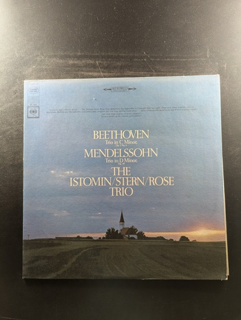
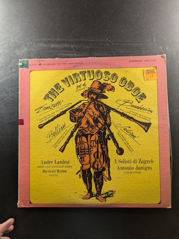
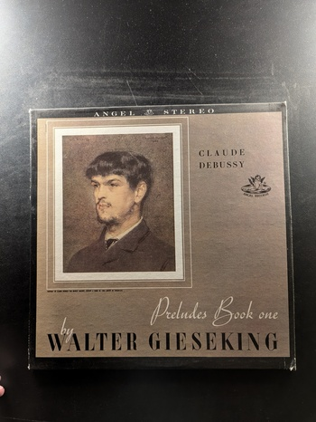
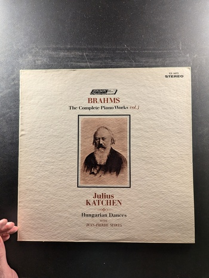
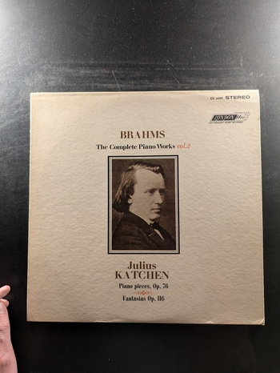

Cassation No. 1 in G Major, K. 63 / Divertimento No. 15 in B-Flat Major, K. 287
Wolfgang Amadeus Mozart
The Musical Heritage Society Inc. MHS 828
Trio Sonatas
Händel
Philips 6514 230
Quartet in A Major · La Tiranna · 2 Trios in G Minor and G Major
Boccherini
Turnabout TV 34550
Beethoven: Trio in C Minor, Op. 1 No. 3 / Mendelssohn: Trio in D Minor, Op. 49
The Istomin/Stern/Rose Trio
Columbia Masterworks MS 7093
Violin Sonatas 'Kreutzer' 'Spring'
Ludwig van Beethoven
Deutsche Grammophon 2535 301
Bartók Violin Sonatas 1 and 2
Isaac Stern
Columbia Masterworks M 30041
English Music for Viola and Piano
Ralph Vaughan Williams, Sir Arthur Bliss
MH5 STEREO 4043
Three Gamba Sonatas
Bach
Concert-Disc CS-242
Beethoven Violin Sonatas
Pinchas Zukerman, Daniel Barenboim
Columbia Masterworks M 30255
Quartet for the End of Time
Olivier Messiaen
The Musical Heritage Society Inc. MHS 978
Divertimento KV 334 • March KV 445
Academy of St. Martin-in-the-Fields Chamber Ensemble
Philips 411 102-1
The Complete Piano Works Vol. 3
Julius Katchen
London ffrr CS 6410
The Complete Piano Works vol. 6
Julius Katchen
London ffrr CS 6477
The Complete Piano Works Vol. 8
Julius Katchen
London ffrr CS 6482
Sonatas for piano and violin, K. 380 and K. 306 / Variations on 'Hélas, j'ai perdu mon amant,' K. 360
Ingrid Haebler, Henryk Szeryng
Philips
The Virtuoso Oboe Vol. 4
Andre Lardrot, I Solisti di Zagreb, Antonio Janigro
Vanguard VSD-71133
Archduke Trio in B-flat Major, Op. 97
Beethoven with Casals
Turnabout TV 34111
Music for Flute and Organ
Jean-Pierre Rampal, Marie-Claire Alain
Musical Heritage Society Inc. MHS 1277
Preludes Book One
Walter Gieseking
Angel Records
Eight Keyboard Sonatas
Padre Antonio Soler
Musical Heritage Society 1346
Hungarian Rhapsodies
Liszt
Vox STPL 512.340
Brahms: The Complete Piano Works Vol. 7
Julius Katchen
London ffrr CS 6474
The Complete Piano Works vol. 5: Hungarian Dances
Julius Katchen
London ffrr CS 6473
The Complete Piano Works Vol. 1
Julius Katchen
London CS 6396
The Complete Piano Works Vol. 2
Julius Katchen
London ffrr CS 6604
{kind=link}
{kind=link}
{kind=link}
{kind=link}
{kind=link}
{kind=link}
{kind=link}
{kind=link}
{kind=link}
{kind=link}
{kind=link}
{kind=link}
{kind=link}
{kind=link}
{kind=link}
{kind=link}
{kind=link}
{kind=link}
{kind=link}
{kind=link}
{kind=link}
{kind=link}
{kind=link}
{kind=link}
{kind=link}